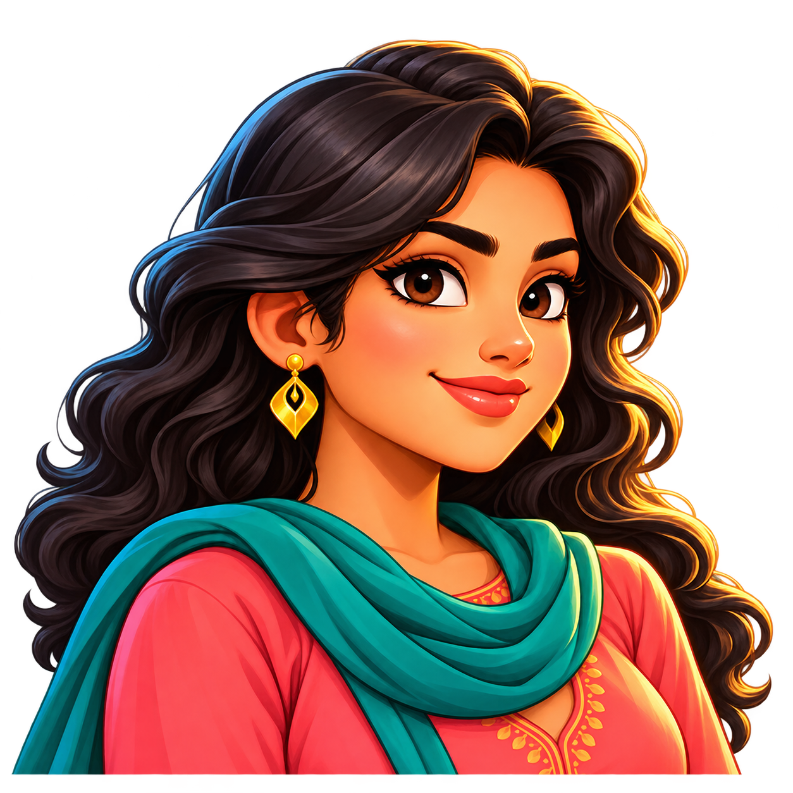
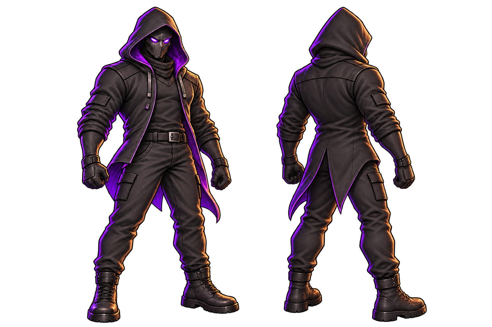

হারকিউলিস এগিয়ে আসছে…
PUSHPO
The Golden Return
A second life.
Borrowed time.
The unknown golden fish transfers part of its own life force to Pushpo, resurrecting her and granting extraordinary abilities. This borrowed life will keep her alive for only 60 days.
Pushpo awakens alone in an apartment, remembering her conversation with the fish. With extraordinary powers and the freedom to choose her path, she steps into Mirpur to hunt rapists, murderers and snatchers who harm innocent people. Every choice matters: her borrowed time is running out.
WASD / arrows move · Q slap · Space / click alternate punch and kick · Shift dodge · M map. Touch controls are on screen.
Defeat five enemies to unlock Sight (E) and reveal disguised predators. Defeat Sumon to unlock Water Mirror (R): a 3-second water bubble on incoming attacks, or cast manually, with a 10-second cooldown.
F / tap near a fuchka vendor: Pushpo’s favourite food restores 20% of maximum health, capped at full health. One meal from each of three shopkeepers; green dots on the map show unused stalls. Shops stay open day and night.
Murderer: 10 pts · Rapist: 15 pts · Snatcher: 5 pts. Four regular enemies at a time. The first two hunts last 15 minutes each; the final rescue gives 60 seconds to arrive. Kills never restore health. Death resets the run.
Explore a living Mirpur: glowing markets, neighborhood conversations, and an elevated metro.
The city can wait.
Gameplay and all mission timers are paused.
Pocket notes
Know your streets.
Inspired by the supplied Mirpur 10 map; distances and buildings are adapted for play.
